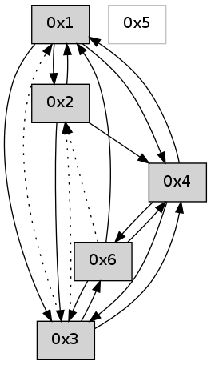

>> << IDX [start] -100 -25 -5 +0 +5 +25 +100 [565.089790106]
 Previous packets
----------------------------------------------------------------------
560.168708 beacon01(adaf) #0 coord=01,02,05,03,04,06 cycle=432.0ms assoc
-- color-indic=0 64 f9 36
560.178670 beacon02(adaf) #0 coord=01,02,05,03,04,06 cycle=432.0ms assoc 64 a8 c9
560.188670 beacon05(adaf) #0 coord=01,02,05,03,04,06 cycle=432.0ms assoc 64 0e e3
560.198670 beacon03(adaf) #0 coord=01,02,05,03,04,06 cycle=432.0ms assoc 64 92 c7
560.208670 beacon04(adaf) #0 coord=01,02,05,03,04,06 cycle=432.0ms assoc 64 34 ed
560.218671 beacon06(adaf) #0 coord=01,02,05,03,04,06 cycle=432.0ms assoc 64 40 f1
560.230346 [Hello(4): seq=360 sym=6,3,1,2 sysInfo= stat=6:5,0,0,0/3:0,0,0,0/1:12,0,0,0/2:0,0,0,0]
560.232806 [Hello(1): seq=259 sym=2,6,3,4 sysInfo= stat=2:3,0,0,0/6:3,0,0,0/3:0,0,0,0/4:14,0,0,0]
----------------------------------------------------------------------
560.660816 beacon01(adaf) #0 coord=01,02,05,03,04,06 cycle=432.0ms assoc
-- color-indic=0 64 3d 59
560.670777 beacon02(adaf) #0 coord=01,02,05,03,04,06 cycle=432.0ms assoc 64 6c a6
560.680776 beacon05(adaf) #0 coord=01,02,05,03,04,06 cycle=432.0ms assoc 64 ca 8c
560.690777 beacon03(adaf) #0 coord=01,02,05,03,04,06 cycle=432.0ms assoc 64 56 a8
560.700777 beacon04(adaf) #0 coord=01,02,05,03,04,06 cycle=432.0ms assoc 64 f0 82
560.710779 beacon06(adaf) #0 coord=01,02,05,03,04,06 cycle=432.0ms assoc 64 84 9e
----------------------------------------------------------------------
561.152924 beacon01(adaf) #0 coord=01,02,05,03,04,06 cycle=432.0ms assoc
-- color-indic=0 64 45 f4
561.162885 beacon02(adaf) #0 coord=01,02,05,03,04,06 cycle=432.0ms assoc 64 14 0b
561.172885 beacon05(adaf) #0 coord=01,02,05,03,04,06 cycle=432.0ms assoc 64 b2 21
561.192886 beacon04(adaf) #0 coord=01,02,05,03,04,06 cycle=432.0ms assoc 64 88 2f
561.202886 beacon06(adaf) #0 coord=01,02,05,03,04,06 cycle=432.0ms assoc 64 fc 33
561.214588 [Hello(4): seq=361 sym=6,3,1 sysInfo= stat=6:5,0,0,0/3:0,0,0,0/1:13,0,0,0]
561.218138 [Hello(1): seq=260 sym=2,6,3,4 sysInfo= stat=2:4,0,0,0/6:3,0,0,0/3:0,0,0,0/4:14,0,0,0]
----------------------------------------------------------------------
561.645032 beacon01(adaf) #0 coord=01,02,05,03,04,06 cycle=432.0ms assoc
-- color-indic=0 64 81 9b
561.654992 beacon02(adaf) #0 coord=01,02,05,03,04,06 cycle=432.0ms assoc 64 d0 64
561.664992 beacon05(adaf) #0 coord=01,02,05,03,04,06 cycle=432.0ms assoc 64 76 4e
561.674993 beacon03(adaf) #0 coord=01,02,05,03,04,06 cycle=432.0ms assoc 64 ea 6a
561.684993 beacon04(adaf) #0 coord=01,02,05,03,04,06 cycle=432.0ms assoc 64 4c 40
561.694994 beacon06(adaf) #0 coord=01,02,05,03,04,06 cycle=432.0ms assoc 64 38 5c
561.706670 [Hello(2): seq=856 sym=4,6,1,3 sysInfo= stat=4:0,0,0,0/6:0,0,0,0/1:10,0,0,0/3:0,0,0,0]
----------------------------------------------------------------------
562.137140 beacon01(adaf) #0 coord=01,02,05,03,04,06 cycle=432.0ms assoc
-- color-indic=0 64 cd 2b
562.147101 beacon02(adaf) #0 coord=01,02,05,03,04,06 cycle=432.0ms assoc 64 9c d4
562.157102 beacon05(adaf) #0 coord=01,02,05,03,04,06 cycle=432.0ms assoc 64 3a fe
562.167102 beacon03(adaf) #0 coord=01,02,05,03,04,06 cycle=432.0ms assoc 64 a6 da
562.177102 beacon04(adaf) #0 coord=01,02,05,03,04,06 cycle=432.0ms assoc 64 00 f0
562.187102 beacon06(adaf) #0 coord=01,02,05,03,04,06 cycle=432.0ms assoc 64 74 ec
562.198775 [Hello(4): seq=362 sym=6,3,1 sysInfo= stat=6:6,0,0,0/3:0,0,0,0/1:14,0,0,0]
562.204438 [Hello(1): seq=261 sym=2,6,3,4 sysInfo= stat=2:5,0,0,0/6:3,0,0,0/3:0,0,0,0/4:14,0,0,0]
----------------------------------------------------------------------
562.629249 beacon01(adaf) #0 coord=01,02,05,03,04,06 cycle=432.0ms assoc
-- color-indic=0 64 09 44
562.639210 beacon02(adaf) #0 coord=01,02,05,03,04,06 cycle=432.0ms assoc 64 58 bb
562.649210 beacon05(adaf) #0 coord=01,02,05,03,04,06 cycle=432.0ms assoc 64 fe 91
562.659210 beacon03(adaf) #0 coord=01,02,05,03,04,06 cycle=432.0ms assoc 64 62 b5
562.669210 beacon04(adaf) #0 coord=01,02,05,03,04,06 cycle=432.0ms assoc 64 c4 9f
562.679210 beacon06(adaf) #0 coord=01,02,05,03,04,06 cycle=432.0ms assoc 64 b0 83
562.690875 [Hello(2): seq=857 sym=4,6,1,3 sysInfo= stat=4:0,0,0,0/6:0,0,0,0/1:11,0,0,0/3:1,0,0,0]
----------------------------------------------------------------------
563.121356 beacon01(adaf) #0 coord=01,02,05,03,04,06 cycle=432.0ms assoc
-- color-indic=0 64 44 43
563.131317 beacon02(adaf) #0 coord=01,02,05,03,04,06 cycle=432.0ms assoc 64 15 bc
563.141319 beacon05(adaf) #0 coord=01,02,05,03,04,06 cycle=432.0ms assoc 64 b3 96
563.151318 beacon03(adaf) #0 coord=01,02,05,03,04,06 cycle=432.0ms assoc 64 2f b2
563.161318 beacon04(adaf) #0 coord=01,02,05,03,04,06 cycle=432.0ms assoc 64 89 98
563.171318 beacon06(adaf) #0 coord=01,02,05,03,04,06 cycle=432.0ms assoc 64 fd 84
563.182999 [Hello(4): seq=363 sym=6,3,1 sysInfo= stat=6:7,0,0,0/3:0,0,0,0/1:15,0,0,0]
563.188658 [Hello(1): seq=262 sym=2,3,4 sysInfo= stat=2:6,0,0,0/3:0,0,0,0/4:14,0,0,0]
----------------------------------------------------------------------
563.613464 beacon01(adaf) #0 coord=01,02,05,03,04,06 cycle=432.0ms assoc
-- color-indic=0 64 80 2c
563.623425 beacon02(adaf) #0 coord=01,02,05,03,04,06 cycle=432.0ms assoc 64 d1 d3
563.633426 beacon05(adaf) #0 coord=01,02,05,03,04,06 cycle=432.0ms assoc 64 77 f9
563.643425 beacon03(adaf) #0 coord=01,02,05,03,04,06 cycle=432.0ms assoc 64 eb dd
563.653425 beacon04(adaf) #0 coord=01,02,05,03,04,06 cycle=432.0ms assoc 64 4d f7
563.663428 beacon06(adaf) #0 coord=01,02,05,03,04,06 cycle=432.0ms assoc 64 39 eb
563.675131 [Hello(2): seq=858 sym=4,1,3 sysInfo= stat=4:0,0,0,0/1:12,0,0,0/3:2,0,0,0]
----------------------------------------------------------------------
564.105571 beacon01(adaf) #0 coord=01,02,05,03,04,06 cycle=432.0ms assoc
-- color-indic=0 64 cc 9c
564.115532 beacon02(adaf) #0 coord=01,02,05,03,04,06 cycle=432.0ms assoc 64 9d 63
564.125535 beacon05(adaf) #0 coord=01,02,05,03,04,06 cycle=432.0ms assoc 64 3b 49
564.135532 beacon03(adaf) #0 coord=01,02,05,03,04,06 cycle=432.0ms assoc 64 a7 6d
564.145533 beacon04(adaf) #0 coord=01,02,05,03,04,06 cycle=432.0ms assoc 64 01 47
564.155533 beacon06(adaf) #0 coord=01,02,05,03,04,06 cycle=432.0ms assoc 64 75 5b
564.167215 [Hello(4): seq=364 sym=6,3,1 sysInfo= stat=6:8,0,0,0/3:0,0,0,0/1:0,0,0,0]
564.172205 [Hello(1): seq=263 sym=2,3,4 sysInfo= stat=2:7,0,0,0/3:0,0,0,0/4:14,0,0,0]
----------------------------------------------------------------------
564.597683 beacon01(adaf) #0 coord=01,02,05,03,04,06 cycle=432.0ms assoc
-- color-indic=0 64 08 f3
564.607645 beacon02(adaf) #0 coord=01,02,05,03,04,06 cycle=432.0ms assoc 64 59 0c
564.617644 beacon05(adaf) #0 coord=01,02,05,03,04,06 cycle=432.0ms assoc 64 ff 26
564.627643 beacon03(adaf) #0 coord=01,02,05,03,04,06 cycle=432.0ms assoc 64 63 02
564.637645 beacon04(adaf) #0 coord=01,02,05,03,04,06 cycle=432.0ms assoc 64 c5 28
564.647645 beacon06(adaf) #0 coord=01,02,05,03,04,06 cycle=432.0ms assoc 64 b1 34
564.659331 [Hello(2): seq=859 sym=4,1,3 sysInfo= stat=4:0,0,0,0/1:13,0,0,0/3:3,0,0,0]